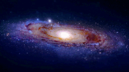

Les sciences grecques sont à l'origine des premiers écrits décrivant la composition du monde et sont les premières à formuler des explications :
les philosophes Parménide, Platon et Aristote formulent le principe du cosmos ; ils admettent l'idée d'une Terre sphérique, mais ils l'envisagent au centre de l'Univers physique, alors que l'école de Milet se représente la Terre plate ;
les pythagoriciens pensent que le Soleil (le feu) est au centre de l'Univers et que la Terre, qui n'est qu'une planète comme les autres, se meut autour de lui. Aristote, dans le traité Du ciel (II, XIII, 293 a 18), confirme l'hypothèse de mouvements planétaires circulaires et parfaitement ordonnés2 ;
Ératosthène tente de réaliser des calculs précis, notamment la mesure de la circonférence d'un méridien terrestre ;
Aristarque de Samos est le premier à envisager un modèle de système planétaire héliocentré. Cette découverte n'est alors pas suivie3, bien qu'elle puisse s’admettre d’un point de vue purement mathématique, parce qu’« elle s’[oppose] à la physique ancienne et [implique] aussi nécessairement un éloignement inimaginable des étoiles fixes par rapport à la Terre (puisque leurs positions relatives [restent] inchangées tout au long de sa révolution annuelle)4 ». Aristarque calcule aussi la distance Terre-Lune pour laquelle il trouve une valeur discutée, mais qui se situe en tout état de cause dans un ordre de grandeur acceptable5, ainsi qu'une distance Terre-Soleil6 ;

Hipparque, au iie siècle av. J.-C., poursuit ce travail : il recalcule, selon des méthodes nouvelles, la distance Terre-Soleil ainsi que la distance Terre-Lune (pour laquelle il retient la valeur de 67 1⁄3 rayons terrestres, contre 60,2 en réalité7), recense environ 850 étoiles8, retrouve approximativement la période de précession des équinoxes, qui était déjà connue des Babyloniens4 ;
Ptolémée poursuit le travail d'Hipparque. Son Almageste sera une référence astronomique essentielle pendant treize siècles.
L'Univers selon le système de Ptolémée, vu par Andreas Cellarius en 1660-1661.
Le philosophe et poète romain Lucrèce, au premier siècle av. J.-C, affirme dans le De rerum natura que « l’univers existant n’est [...] limité dans aucune de ses dimensions », qu’il n’a « ni limite, ni mesure » et qu’importe « en quelle région de l’univers on se place [...] puisqu’on laisse le tout immense s’étendre également dans tous les sens »9.
Ces connaissances du monde grec perdurent et influencent les sciences arabes après l'effondrement de l'Empire romain d'Occident. Elles restent présentes en Orient (particulièrement, avec des hauts et des bas, à Byzance10), même si Cosmas d'Alexandrie tente, sans succès, de restaurer le modèle d'un monde plat.
La Renaissance porte à son apogée cette représentation du monde, grâce aux explorations et aux grandes découvertes qui eurent lieu du xiiie au xvie siècle, à partir de systèmes géographiques et cosmologiques très élaborés (projection de Mercator).
La révolution copernicienne bouleverse cette cosmologie en trois étapes :
Copernic redécouvre l'héliocentrisme. Toutefois, il reste attaché aux sphères transparentes du modèle d'Aristote (pourtant délaissé par Ptolémée) censées soutenir les planètes et leur imprimer leur mouvement ; il présente son système comme un simple
artifice destiné à simplifier les calculs ;
Le dominicain Giordano Bruno défend la réalité du modèle héliocentrique et l'étend à toutes les étoiles, ouvrant la dimension de l'Univers physique à l'infini. Il sera brûlé au bûcher en tant qu'hérétique non pour des raisons scientifiques, mais religieuses ;
Kepler, Galilée et Newton posent les bases fondamentales de la mécanique à partir du mouvement des planètes, grâce à leurs études respectivement du mouvement elliptique des planètes autour du Soleil, l'affinement des observations astronomiques par la définition du mouvement uniformément accéléré, et la formalisation mathématique de la force de gravité. L'Univers, toutefois, reste confiné dans le Système solaire.
Des modèles physiques tels que la sphère armillaire ou l'astrolabe ont été élaborés. Ils permettent d'enseigner et de calculer la position des astres dans le ciel visible. Aujourd'hui encore, la carte du ciel mobile aide les astronomes amateurs à se repérer dans le ciel, c'est une réincarnation de l'astrolabe.
En 1781, l'astronome britannique William Herschel découvre Uranus orbitant au-delà de l’orbite de Saturne, avant que ne soient trouvées Neptune et Pluton, le monde s'agrandissait de plus en plus.
Une étoile est un objet céleste en rotation, de forme a priori sphérique2, constitué essentiellement de plasma et dont la structure est modelée par la gravité. Lors de sa formation, une étoile est essentiellement composée d’hydrogène et d’hélium. Durant la majeure partie de son existence, son cœur est le siège de réactions de fusion nucléaire, dont une partie de l’énergie est rayonnée sous forme de lumière ; la matière qui la compose s’en trouve presque complètement ionisée.
Le Soleil est l’étoile la plus proche de la Terre, l’énergie qu’il rayonne y permet le développement de la vie. Il apparaît bien plus lumineux que toutes les autres étoiles en raison de sa proximité : la seconde étoile la plus proche de la Terre, Proxima du Centaure, est 250 000 fois plus éloignée. Sauf en cas exceptionnel comme une éclipse, les autres étoiles ne sont visibles que la nuit lorsque leur éclat n’est pas noyé par celui du ciel diurne, résultant lui-même de la diffusion de l’éclairement solaire.
Les étoiles sont regroupées au sein de galaxies. Une galaxie typique, comme la nôtre, la Voie lactée, contient plusieurs centaines de milliards d’étoiles. Au sein des galaxies, les étoiles peuvent être liées dans des systèmes multiples (quelques étoiles) ou des amas (plusieurs dizaines à quelques centaines de milliers d’étoiles).
La sphère céleste fait également apparaître des groupements d’étoiles, les constellations ; il s’agit en fait d’une illusion optique due à l’effet de projection. Les étoiles composant une constellation sont généralement situées à des distances très différentes de la Terre.